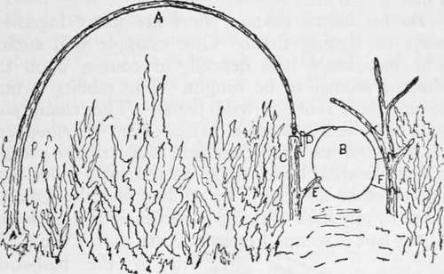
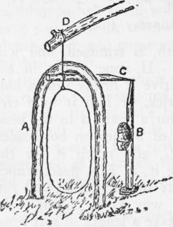

Snaring
Description
This section is from the book "Camping And Woodcraft", by Horace Kephart. Also available from Amazon: Camping and Woodcraft.
Snaring
It is not worth while here to describe deadfalls, pitfalls, coop traps, and the like; for our adventurer probably has no tool to make them, nor anything to bait them with. Anyway, a snare will serve just as well, takes much less time and material to set up, and game can be caught in it without any bait at all.
Ground snares, which catch by the feet or legs, are not to be considered, as they are likely to be broken by the animal's frantic plunges, or may be chewed off, unless made of wire. The surest way is to fix a noose to a spring-pole, and set it with a trigger, so as to catch the animal round the neck and jerk it up into the air where its struggles are soon over.
Just how to set a snare depends upon what kind of animal you try for. Take, for example, rabbits (I use this word generically to include cottontails and hares of all degrees). They are the commonest of game everywhere, from far north to farthest south, in swamps, in woodlands, on the plains, and up the mountains to tree limit. Since they are fond of beaten paths, and are not of a suspicious nature, they can be caught without bait; although their food is such that even a lost man can find it if he chooses to bait his snares. They do not hibernate, but are out all the year round. So the rabbit is a lost man's main chance in the meat line.
A good snare for setting in a runway is shown in Fig. 190. It catches "coming or going." A small, springy sapling (A), growing a few feet to one side of the rabbit path, is trimmed, and will he bent over for setting. If none grows in the right place, cut one and drive it firmly into a hole made with a sharpened stick, or lash it to a tree or stub. The best place for a snare is in the bend of a runway with plenty of bushes on both sides. Drive a stout stake at C, and notch it for the trigger D. Plant opposite it, at F, a dead branch that forks over top of snare so the animal will run under, but not in such a way as to entangle the loop when sprung. Now take a length of soft brass or copper wire, or a strong cord (No. 1-0 braided linen fish-line is good), twist or tie it to the end of spring-pole and around the little wooden trigger, and form the long part into a noose. Bend the pole and set the trigger, as shown, extending loop over the runway, a couple of inches off the ground. The noose may be about six inches in diameter. If of wire, it can be held in place by drawing it lightly into the cleft end of a stub, as at E, or a split stick stuck in the ground for that purpose. If cord is used, hold it in place with little twigs or with blades of grass bent round it and drawn back into nicks made with a knife in the stakes at each side, as at F. No bait is needed.
Fig. 190. Runway snare.
This is also a good snare to set at the mouth of a den or burrow.
As for baited snares, there are many ingenious ways of rigging therm One example will suffice. The bait itself will depend, of course, upon the kind of animal to be caught. For rabbits it may be succulent roots or wild fruits. The 'coon, 'possum, and skunk have a varied diet: grasshoppers, crickets, beetles, grubs, mussels, fish, crayfish, frogs, snakes, lizards, birds, eggs, nuts, fruits, roots; and lots of other things. The wildcat and the lynx are lured by any kind of meat, particularly if it is bloody. If the bait is so small or so delicate that it cannot be tied to the bait-stick, make for it a little pan of bark fastened to the stick. All wild animals are passionately fond of salt, and, if you have any of it, a pinch of salt rubbed on the bait will make it all the more enticing.
The snare shown in Fig. 191 is easy to rig, requires only a short length of wire or cord, and goes off like a hair trigger. Its dimensions will depend on the size of the animal it is set for. The idea is to have the loop only large enough for the prey to stick its head through without touching on more than one. side, if any, and just high enough from the ground so as not to catch by a leg or foot. The bait sets back only far enough for the noose to catch around the throat and behind the ears—except in case of a 'coon, which always reaches in with its paw, so the bait-stick must be set far enough back to allow for this.
Fig. 191. Baited snare.
For rabbits, cut a limber stick about two feet long and as thick as your thumb; sharpen both ends, bend in the middle, and drive in the ground in the form of an arch (A). The end of the spring-pole, wdien bent over, comes just over the top of this arch (D). Now cut a stick (B) of length corresponding to height of arch, trim one end to a slightly wedge-shaped point, and tie the bait to the middle. A similar stick (C) is cut of such length that, when rigged as here shown, the bait will stand at the right distance back of the arch. The figure shows how the noose is attached. If the ground is soft, set the butt of the bait-stick on a fiat stone or chip.
To make the animal stick his head in through the arch, instead of elsewhere, drive dead sticks in a semi-circle, with the arch for an entrance, leaving twigs on them to give a natural appearance to the little den.
Such a snare can be used with success on large animals, a stronger spring-pole and noose being required, of course, and the pen made larger, accordingly. Even such powerful beasts as the bear and the moose can be caught with snares of twisted rawhide or rope—but we are considering only small game.
When setting for animals that are wily and suspicious, use no green sticks, but sound dead ones, rub dirt over the cuts, drop no chips about the snare, leave the ground undisturbed, and handle things as little as possible, for your own scent is a "give-away".
It is of no use to set snares or other traps except where there is recent "sign," such as tracks, droppings, twigs and bark nibbled, feathers or hair of animals eaten, and so on. You must find where your quarry lives, or where it often goes in search of food.
If there is likelihood of a finely-set snare being sprung by birds or mice, make the ends of the trigger-sticks flat, with good bearing, and tie the bait on so firmly that it will take a smart tug to release the trigger.
A very simple and effective snare for birds, as well as for small mammals, is rigged by dropping a small evergreen or other bushy tree across a trail or runway, so that its stem is a foot or so above the ground (depending upon size of animal) ; then trim off enough under branches to leave an opening in the middle of the trail, and set a noose in it, attached to the tree. Two or three such openings may be made, with a noose in each. Scatter bait along the path on both sides of the tree. An animal finding a noose drawing about its neck will push onward, instead of backing out, and so choke itself to death.
If }Tou have neither wire nor cord to make nooses with, use any of the strong, pliable rootlets, or bark cords, mentioned in Chapter XV. After one animal is captured, its skin and intestines can be made into strings or thongs for such purposes.
Continue to: